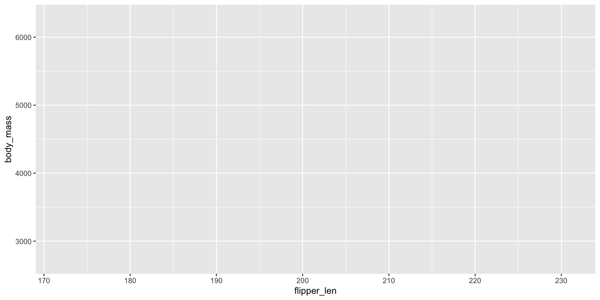
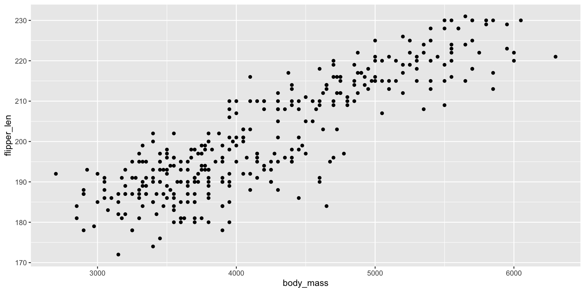
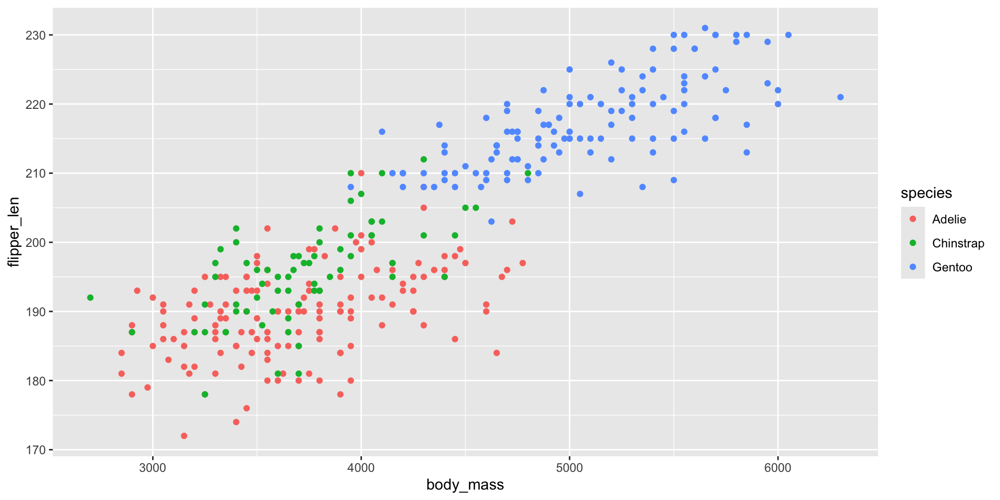
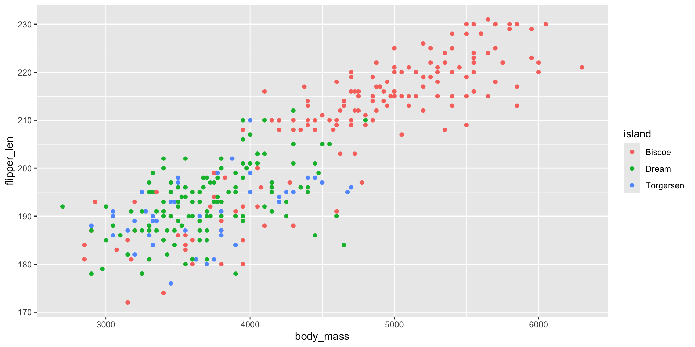
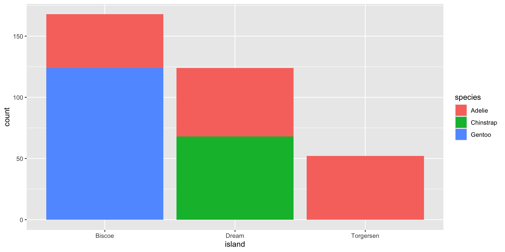
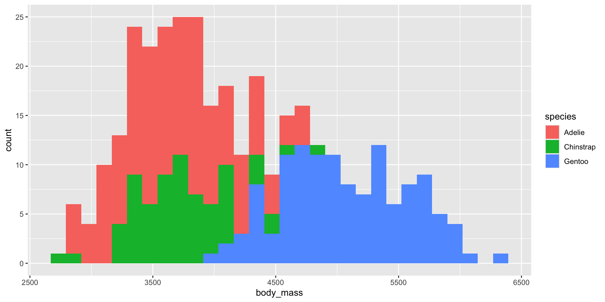
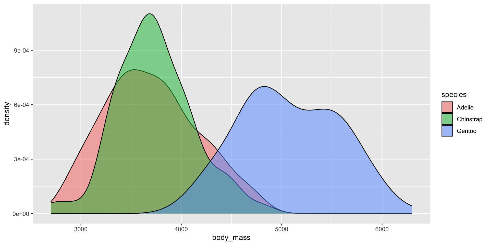
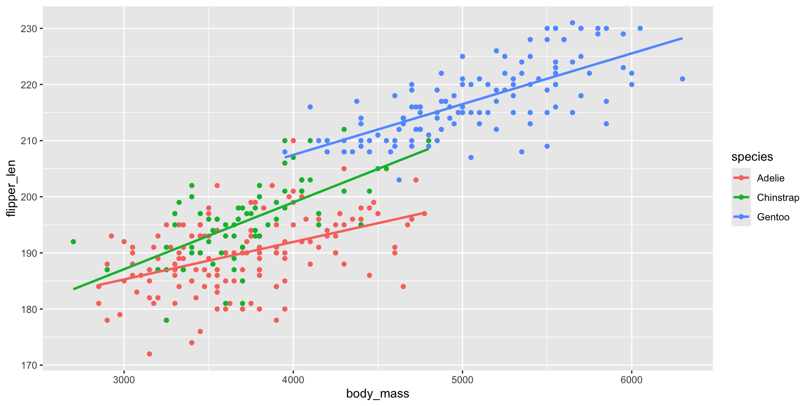
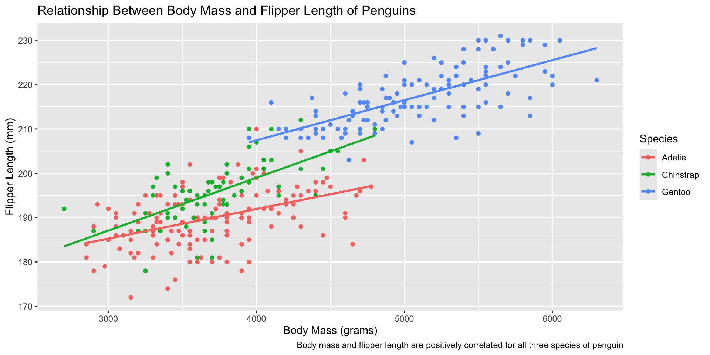
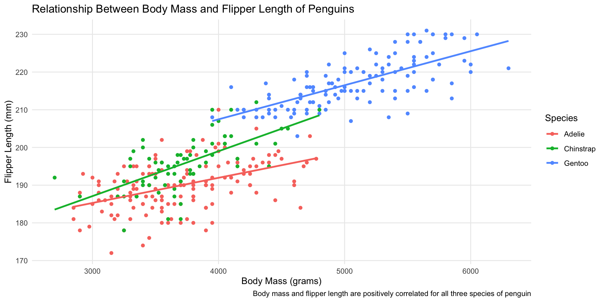

Introduction to Data Visualization with R
ggplot
ggplot is the most common approach for creating data visualizations with R.
Source: Large parts of this section are adapted from the first chapter of R for Data Science.
ggplot Syntax
Making a data visualization with ggplot starts with
where data is a dataframe and aes() describes how columns in the dataframe will be used in the visualization.
ggplot Aesthetics
For example
will use the x-axis for flipper_len and the y-axis for body_mass.
Aesthetics Options
Common aesthetics include:
xycolor
fillshapesize
You can read more about aesthetics in the ggplot documentation here.
Grammar of Graphics
The core idea behind ggplot is that plots are composed by combining components like geometries and themes using +. This makes it easy to iterately make data visualizations and keeps the syntax consistent between different kinds of plots.
Geometries
The next step in making a plot with ggplot is choosing how to visualize the data. We’ll start with a scatter plot.
With ggplot, these choices always start with “geom_”.
Geometries
Geometries
Geometries
Geometry Options
Some of the most common geometries are
geom_point()geom_line()geom_bar()geom_col()
geom_histogram()geom_density()geom_label()geom_smooth()
You can read about all the geometries here.
geom_bar() Example

Second geom_bar() Example
geom_bar() versus geom_smooth()
geom_bar() only takes an x-axis in aes() and uses the number of rows for the y-axis.
In contrast, geom_col() takes a y-axis argument.
geom_histogram()
geom_histogram() produces a histogram which visualizes the distribution of a variable/column. Histograms place values into bins (e.g. dividing 0 to 99 into 0-9, 10-19, 20-29… 90-99). The bins are the x-axis and the count of items in each bin is the y-axis.
geom_histogram() Example
geom_density()
geom_density() is another visualization of the distribution of a variable/column. You can think of it as something like a smoothed out histogram.
geom_density() Example
geom_smooth()
geom_smooth() adds lines of best fit to the plot. geom_smooth(method = "lm") finds the line of best fit with a linear regression (if you don’t know what that is, don’t worry–it will be covered in Math for Data Science).
geom_smooth() Example
Labels
You can label your plot with labs() like
Example of Labels
ggplot(penguins, aes(x = body_mass, y = flipper_len, color = species)) +
geom_point() +
geom_smooth(method = "lm", se = FALSE) +
labs(
title = "Relationship Between Body Mass and Flipper Length of Penguins",
x = "Body Mass (grams)",
y = "Flipper Length (mm)",
caption = "Body mass and flipper length are positively correlated for all three species of penguin"
)Example of Labels
Themes
You can change the appearance of ggplot figures using themes. Complete themes start with theme_. You can also adjust the individual theme components with theme().
Theming Example
ggplot(penguins, aes(x = body_mass, y = flipper_len, color = species)) +
geom_point() +
geom_smooth(method = "lm", se = FALSE) +
labs(
title = "Relationship Between Body Mass and Flipper Length of Penguins",
x = "Body Mass (grams)",
y = "Flipper Length (mm)",
color = "Species",
caption = "Body mass and flipper length are positively correlated for all three species of penguin"
) +
theme_minimal() +
theme(panel.grid.minor = element_blank())Theming Example
Experiment
Let’s take a little bit and practice making various plots. You can use the penguins dataset or try
iris: Data on the length and width of the sepal and flower of three species of Iris plants.Titanic: Survival status of passengers on the Titantic by class, sex, and age.trees: The girth, height, and volume of 31 trees.
You can read about all the datasets built into R with ?datasets.